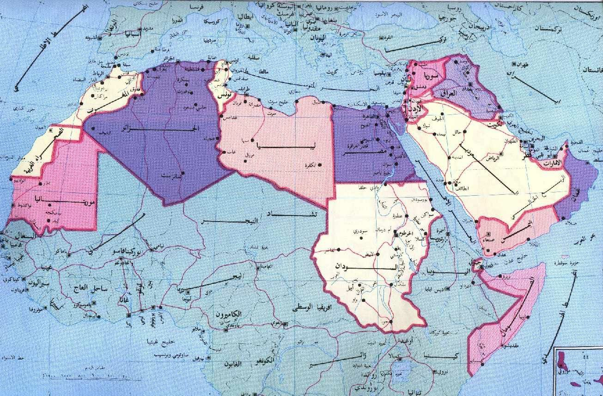

AL HAWRA FANANIS
Ramadan in Iraq and among Muslims
for viewingAL HAWRA FANANIS
لماذا رمضان مرتبط بالفانوس؟
احد القصص تقول : أن الخليفة الفاطمي كان يخرج إلى الشوارع ليلة الرؤية ليستطلع هلال شهر رمضان، وكان الأطفال يخرجون معه ليضيؤوا له الطريق. كان كل طفل يحمل فانوسه ويقوم الأطفال معاً بغناء بعض الأغاني الجميلة تعبيراً عن سعادتهم باستقبال شهر رمضان
خطبة الرسول الاعظم بمناسبة شهر رمضان المبارك
أَيُّهَا النَّاسُ إِنَّهُ قَدْ أَقْبَلَ إِلَيْكُمْ شَهْرُ اللَّهِ بِالْبَرَكَةِ وَ الرَّحْمَةِ وَ الْمَغْفِرَةِ ، شَهْرٌ هُوَ عِنْدَ اللَّهِ أَفْضَلُ الشُّهُورِ ، وَ أَيَّامُهُ أَفْضَلُ الْأَيَّامِ ، وَ لَيَالِيهِ أَفْضَلُ اللَّيَالِي ، وَ سَاعَاتُهُ أَفْضَلُ السَّاعَاتِ ، هُوَ شَهْرٌ دُعِيتُمْ فِيهِ إِلَى ضِيَافَةِ اللَّهِ ، وَ جُعِلْتُمْ فِيهِ مِنْ أَهْلِ كَرَامَةِ اللَّهِ ، أَنْفَاسُكُمْ فِيهِ تَسْبِيحٌ ، وَ نَوْمُكُمْ فِيهِ عِبَادَةٌ ، وَ عَمَلُكُمْ فِيهِ مَقْبُولٌ ، وَ دُعَاؤُكُمْ فِيهِ مُسْتَجَابٌ ، فَاسْأَلُوا اللَّهَ رَبَّكُمْ بِنِيَّاتٍ صَادِقَةٍ وَ قُلُوبٍ طَاهِرَةٍ أَنْ يُوَفِّقَكُمْ لِصِيَامِهِ وَ تِلَاوَةِ كِتَابِهِ ، فَإِنَّ الشَّقِيَّ مَنْ حُرِمَ غُفْرَانَ اللَّهِ فِي هَذَا الشَّهْرِ الْعَظِيمِ ، وَ اذْكُرُوا بِجُوعِكُمْ وَ عَطَشِكُمْ فِيهِ جُوعَ يَوْمِ الْقِيَامَةِ وَ عَطَشَهُ ، وَ تَصَدَّقُوا عَلَى فُقَرَائِكُمْ وَ مَسَاكِينِكُمْ ، وَ وَقِّرُوا كِبَارَكُمْ ، وَ ارْحَمُوا صِغَارَكُمْ ، وَ صِلُوا أَرْحَامَكُمْ ، وَ احْفَظُوا أَلْسِنَتَكُمْ ، وَ غُضُّوا عَمَّا لَا يَحِلُّ النَّظَرُ إِلَيْهِ أَبْصَارَكُمْ ، وَ عَمَّا لَا يَحِلُّ الِاسْتِمَاعُ إِلَيْهِ أَسْمَاعَكُمْ ، وَ تَحَنَّنُوا عَلَى أَيْتَامِ النَّاسِ يُتَحَنَّنْ عَلَى أَيْتَامِكُمْ ، وَ تُوبُوا إِلَى اللَّهِ مِنْ ذُنُوبِكُمْ ، وَ ارْفَعُوا إِلَيْهِ أَيْدِيَكُمْ بِالدُّعَاءِ فِي أَوْقَاتِ صَلَاتِكُمْ ، فَإِنَّهَا أَفْضَلُ السَّاعَاتِ يَنْظُرُ اللَّهُ عَزَّ وَ جَلَّ فِيهَا بِالرَّحْمَةِ إِلَى عِبَادِهِ ، يُجِيبُهُمْ إِذَا نَاجَوْهُ ، وَ يُلَبِّيهِمْ إِذَا نَادَوْهُ ، وَ يُعْطِيهِمْ إِذَا سَأَلُوهُ ، وَ يَسْتَجِيبُ لَهُمْ إِذَا دَعَوْهُ .
:من عادات العراقيين في رمضان
من العادات والطقوس الرمضانية المتوارثة في العراق، تبادل الأقارب والجيران للوجبات الرمضانية بين بعضهم البعض، حيث يرسلون كمية من إفطارهم وشرابهم للجيران، في تقليد يعزز روح المشاركة والتعاضد بين الناس، وبما يضفي المزيد من الحميمية والروحانية على أجواء رمضان. ومن العادات ايضا. ظهور "المسحرجي"، وهو شخصية فلكلورية مشهورة يطلق عليها في بعض الدول "المسحراتي"، كما يسمى في بعض مناطق العراق، بـ"أبو طبل"، نسبة للآلة التي يحملها، وهي "الطبلة" التي يدق عليها وهو يتجول قبل الفجر في الشوارع ليذكّر سكانها بتناول وجبة السحور قبل أن يرفع أذان الفجر.
"لعبة" المحيبس
تنتشر لعبة "المحيبس" التراثية بشكل لافت للنظر في رمضان، وتستهوي العراقيين من لاعبين ومشجعين، وتمارس في الأحياء والمقاهي الشعبية منذ مئات السنين. وتاريخ اللعبة غير معروف، لكن الخبراء يجمعون على أنها تعتمد على الفراسة بالدرجة الأولى. وفي لعبة "المحيبس"، يتكون فريقان بعدد مُتساوٍ من اللاعبين، وقد يصل العدد إلى مائة شخص لكل فريق، ويتم إخفاء خاتم، ويبدأ فريق في رحلة طويلة للكشف عن الخاتم وانتزاعه من الفريق الآخر.
:من عادات العرب في رمضان
حلوى الكرديانة من أيدي الأطفال في تونس
يبدأ التونسيون بالاستعداد لـ"سيدي رمضان" مثلما درجوا على تسميته، حبا وتفضيلا من بين شهور السنة، فتزيد حركة الشوارع والأسواق والمحلات، ويشرع الكثيرون في شراء المستلزمات الغذائية من التوابل والدقلة (التمر التونسي) والشعير وغيرها من لوازم المطبخ في رمضان. "و تشتري النساء الجديد من الصحون والأواني لاستعمالها في الشهر الكريم، وتنظف ربات البيوت منازلهن كأنهن يتجهزن لعرس أو ضيف عزيز، ويخرج "بوطبيلة" الذي يجوب الشوارع ليلا بطبلته ينادي للسحور". وتكمل صابرين "أما عن موائد رمضان في تونس، فلا يغيب عنها يوميا التمر بالزبد وحساء الفريك (الشعير) والسلطة والبُريك (وهي أكلة تونسية تشبه السمبوسك محشوة بمكونات خاصة) إلى جانب الطبق الرئيسي، وأطباق أخرى تختلف باختلاف الجهات التونسية وعاداتها، سواء في الإفطار أو السحور. وفي الأحياء الشعبية خاصة، يبدأ الأطفال منذ اليوم الأول بالتنافس في صنع (الكرديانة)، وهي نوع من الحلويات مصنوعة من بياض البيض والسكر، ويمضي الأطفال في صنعها وخلطها حتى تكبر وترتفع فترة ما بعد الظهيرة إلى أذان المغرب".
طقوس الإفطار في السودان
في كل أسرة هناك بيت العائلة، يجتمعون فيه ونتشارك الإفطار، وتجلب كل أسرة وجبة إفطارها معها، وفي حين تتناول النساء إفطارهن داخل البيوت، يحمل الرجال وجبات الإفطار في صينية، ويخرجون ليتناولوه في الشارع أمام بيوتهم. وتقوم كل مجموعة من الجيران بمشاركة الطعام سويا، والغرض من هذه العادة إتاحة الفرصة لعابري السبيل والفقراء من تناول الطعام معهم بدون حرج". ومن الأكلات الأساسية في صينية رمضان، العصيدة والفلافل السودانية والفول، أما العصائر المشهورة في المائدة الرمضانية عصير الحلو مر (والذي يصنع من نبات الذرة)، والتمر هندي، وعصير حبوب القنقليز، والليمون.
الجزائر) قفة رمضان" للمساكين)
عن أجواء رمضان في الجزائر "قبل رمضان بأسبوع يقومون بغسيل ساحات المساجد، ويقوم الأطفال بالخروج بأكياس لتجميع القاذورات من الشوارع؛ لأن المساجد لن تتسع لأعداد المصلين الكبيرة، مما يجعلهم يصلون في الشوارع. كما يقومون بتنظيف البيت ودهان الغرف، وتخرج النساء لشراء مستلزمات جديدة للمطبخ من أطباق وأكواب، وخلطات التوابل وتحضيرها، وترقيد (تخليل) الفلفل والزيتون، وتقوم النساء كل يوم بعجن الخبز. و عادة "قفة رمضان" عند الجزائريين، فكل بيت مقتدر ماديا يساعد أسرة فقيرة عن طريق تقديم الطعام في (القفة) يوميا طوال أيام رمضان. وهناك موروث شعبي شفوي قديم اشتهرت به الجزائر، وهي لعبة "البوقالة"، حيث تجتمع النساء في سهرة رمضانية لممارسة طقوسها وقراءة الطالع حول صينية الشاي وحلوى قلب اللوز الشهيرة.